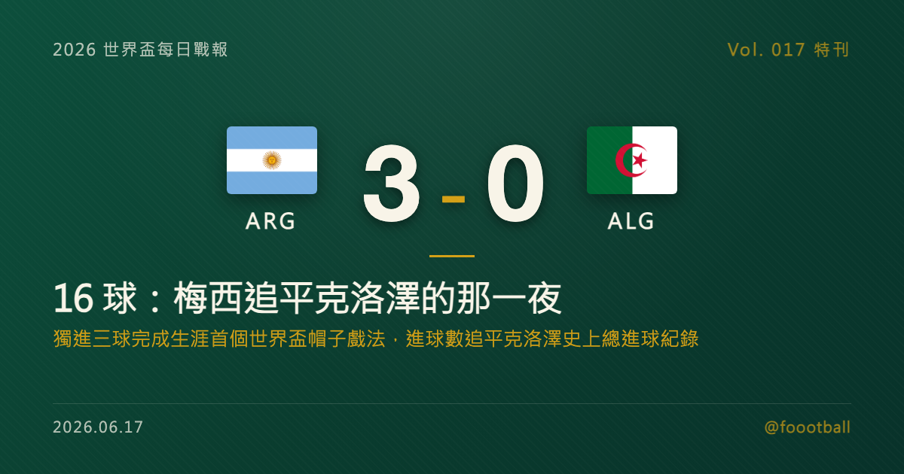

16 球：梅西追平克洛澤的那一夜
2026 世界盃 J 組首輪，衛冕冠軍阿根廷 3-0 擊敗阿爾及利亞，三顆進球全部來自一個人——38 歲的梅西。他在第 17、60、76 分鐘破門，完成世界盃生涯的第一個帽子戲法，把個人世界盃總進球數推上 16 球，追平德國名宿克洛澤（Miroslav Klose）保持的史上最多進球紀錄；同場也是他的第 200 場國家隊出賽，並成為史上首位出戰 6 屆世界盃的球員。這篇特刊，把三顆球、這個 16，與一整串被同時刷新的紀錄，逐項拆開來講。

2026 世界盃特刊｜Vol. 017 番外
有些紀錄，是用一整個生涯去逼近的；而有些夜晚，會把好幾項這樣的紀錄，一次擺到你面前。
2026 世界盃 J 組首輪，在堪薩斯城的箭頭體育場（Arrowhead Stadium），衛冕冠軍阿根廷面對阿爾及利亞。九十分鐘過後，計分板是 3-0，三顆進球全部來自同一個人——38 歲、再過一週就要滿 39 歲的隊長梅西（Lionel Messi）。這是他世界盃生涯踢了二十年、第六屆賽事，才終於完成的第一個帽子戲法；而當第三球落網的那一刻，他的名字也並列到了世界盃史上射手榜的最頂端。
這不是一場大開大闔的比賽。阿根廷全場控球只比對手多一點，真正把比賽拉開的，是一個人在三個不同位置、用三種不同方式，把握住了僅有的機會。所以這一夜值得慢慢拆——先拆三顆球，再拆數據，最後拆那一整排被同時改寫的紀錄。
一、三顆球的解剖：直塞、補射、弧線
梅西的帽子戲法，三球沒有一顆是重複的。對看門道的球迷來說，這正是它最有意思的地方。
第 17 分鐘，第一球——右腳，球門遠角。 阿根廷在前場完成串聯，由迪保（Rodrigo De Paul）送出一記穿越防線的直塞，梅西在禁區邊緣前插接球，用右腳推射，把球送進球門右上角。這是最典型的「跑位 + 一擊致命」：不靠盤帶，靠的是時機與落點。
第 60 分鐘，第二球——禁區內的補射。 阿根廷的攻勢中，麥艾利斯特（Alexis Mac Allister）的低射被阿爾及利亞門將（前法國名宿席丹之子 Luca Zidane）擋出，皮球彈到門前，梅西第一時間用右腳把握住這次反彈機會破門。這是一顆「禁區殺手」式的進球——和外界對他「組織者」的印象正好相反，它說明梅西這個位置上的嗅覺，從來沒有離開過球門。
第 76 分鐘，第三球——左腳，招牌弧線。 帽子戲法的句點，回到了大家最熟悉的那個畫面：他在禁區邊緣完成一次小範圍的撞牆配合後，用左腳兜出一道弧線，把球送進球門左下角。一右一左、一插上一補射一兜射，三球串起來，幾乎是一份濃縮版的「梅西進球辭典」。
有一個細節值得玩味：梅西在這之前踢了五屆世界盃、攻進 13 球，卻從來沒有在單場世界盃比賽裡進過三球。換句話說，他的世界盃進球一向是「細水長流」——屆屆都有、每場一兩球，卻偏偏始終缺一場爆發式的帽子戲法。直到第六屆、38 歲，這個遲到了二十年的帽子戲法才終於到來，而且一來，就直接追平了史上總進球紀錄。對一位常被歸類為「組織者」而非「終結者」的球員來說，這個遲來的句點，反而更耐人尋味。
值得一提的是，這場比賽阿根廷的先發陣容，高度延續了 2022 年在卡達奪冠的班底——這支球隊的骨架沒有散，而隊長依然是那個按下開關的人。
二、數據面：把「3-0」拆給數據控看
如果只看比分，3-0 像是一場碾壓；但把數據攤開，會看到一個更精確的故事——阿根廷沒有壓著對手狂轟，而是用更高的效率，把有限的機會兌現成了三球。
| 指標 | 🇦🇷 阿根廷 | 🇩🇿 阿爾及利亞 |
|---|---|---|
| 控球率 | 約 50% | 約 44% |
| 射門次數 | 10 | 7 |
| 射正次數 | 6 | 1 |
| 預期進球 xG | 約 2.00 | 約 0.68 |
幾個重點：
- 射門 10-7 看似接近，但射正 6-1 與 xG 2.00-0.68 才真正揭示差距。 阿根廷的威脅幾乎全部集中在「有效射門」上——這正是強隊與一般球隊的分野：不是射得多，而是射得準、射在刀口上，把更高質量的機會轉成進球，而非靠數量狂轟。
- xG 約 2.0 對 0.68。 阿根廷整場累積的預期進球約兩球，最後進了三球，代表臨門一擊的把握度甚至高於平均期望值——而把這份期望值變成現實的，主要就是梅西。
- 梅西個人包辦了全隊最多的 6 次射門，並創造 2 次機會（全場最高）。 換句話說，阿根廷的進攻不只「終結」靠他，連「製造」也大量經過他的腳下。一個 38 歲的球員，在一場世界盃揭幕戰裡同時是隊上的第一射手與第一組織者，這件事本身就不太尋常。
至於阿爾及利亞，全場 7 射僅 1 中、xG 不到 0.7，說明他們面對衛冕冠軍始終沒能真正打開局面。但小組賽才剛開始，這場硬仗之後，他們仍有調整與反撲的時間。
三、16 球的拼圖：梅西與克洛澤的逐屆對照
梅西這三球的份量，不只在於 3-0，而在於那個總和——16。
進球前，梅西的世界盃生涯總進球是 13 球；這個帽子戲法讓他來到 16 球，追平了德國名宿克洛澤（Miroslav Klose）保持的世界盃史上最多進球紀錄。有趣的是，兩人抵達 16 的路徑完全不同。把兩人的進球逐屆攤開，會看到兩種截然不同的生涯曲線：
| 屆別 | 🇦🇷 梅西 | 🇩🇪 克洛澤 |
|---|---|---|
| 2002 | — | 5 |
| 2006 | 1 | 5 |
| 2010 | 0 | 4 |
| 2014 | 4 | 2 |
| 2018 | 1 | — |
| 2022 | 7 | — |
| 2026 | 3（目前） | — |
| 合計 | 16 | 16 |
克洛澤的 16 球，集中在 2002 到 2014 的四屆，前兩屆就轟進 10 球（2002 拿銀靴、2006 拿金靴），是一條「前段爆發、後段收尾」的曲線——他的最後一球，正是 2014 年半準決賽德國 7-1 巴西時超越羅納度（Ronaldo）登上歷史第一的那球。
梅西的 16 球則攤在 2006 到 2026 整整六屆、二十年裡，中間還有 2010 年的「掛零」。他的曲線是「細水長流、晚節爆發」——真正的高峰落在 35 歲奪冠的 2022 年（7 球），以及 38 歲的這個 2026 年（目前 3 球）。一個用四屆封頂的紀錄，被另一個用六屆、二十年慢慢追平。同樣是 16，背後是兩種完全不同的足球生命。
而且，這個 2026 還沒結束——只要阿根廷走得夠遠，梅西手上還有改寫紀錄、從「並列」變成「獨佔」的機會。
四、6 屆世界盃：一份從 2006 到 2026 的點名單
如果說 16 球是這一夜最閃亮的數字，那麼還有一個數字藏得更深、卻同樣重：6。
當梅西這一晚出現在阿根廷的先發名單裡，他就成為了足球史上第一位出戰 6 屆世界盃的球員。在他之前，能出戰 5 屆世界盃的球員，史上也屈指可數——墨西哥的門將 Antonio Carbajal、後衛 Rafael Márquez、中場 Andrés Guardado，德國的 Lothar Matthäus（馬特烏斯），以及葡萄牙的 Cristiano Ronaldo（C 羅）。梅西自己在 2022 年時，也還只是「並列 5 屆」的其中一員。
如今，他一個人把這個數字推到了 6。從 2006 年德國世界盃那個還帶著青澀、首戰對塞爾維亞與蒙特內哥羅就破門的少年，到 2010、2014、2018、2022，再到 2026——這條線拉了整整二十年。2022 年在卡達，他終於捧起那座唯一缺席的獎盃；而 2026 年，他選擇繼續走下去，於是有了這個前人未曾抵達的「第六次」。（值得一提的是，若 C 羅在葡萄牙的揭幕戰登場，也將追平 6 屆的門檻——但在梅西踢完這場時，史上獨自站在「6」這個數字上的，只有他一人。）
五、梅西的世界盃二十年：從塞爾維亞到堪薩斯城
要看懂這 16 球，得把它放回二十年的長度裡。
2006 年德國世界盃，18 歲的梅西第一次登場，對塞爾維亞與蒙特內哥羅替補上陣就攻入一球，成為當屆最年輕的進球者之一——那是這條二十年長線的起點。2010 年南非，他全程參與球隊的征程、卻一球未進，是生涯六屆裡唯一「掛零」的一屆。2014 年巴西，他重新爆發，小組賽連續破門、一路帶著阿根廷殺進決賽，最終在加時 0-1 不敵德國、屈居亞軍——他仍拿下了當屆金球獎，但「個人金球獎 + 球隊亞軍」的那份落差，後來成了他生涯最常被提起的遺憾之一。2018 年俄羅斯，阿根廷在 16 強止步，那是梅西世界盃生涯一段相對低潮、外界甚至一度議論他國家隊前景的記憶。
直到 2022 年卡達，35 歲的他終於完成了那塊缺失的拼圖——7 顆進球、金球獎，以及那座等了一輩子的大力神盃，把生涯最完整的句點留在了那一屆。對許多人來說，2022 本該是一場完美的告別。本以為故事到此為止，他卻選擇再走一屆；於是有了 2026 年堪薩斯城這一夜，有了第六屆世界盃、第 200 場國家隊，以及這個追平克洛澤的 16。
從塞爾維亞到堪薩斯城，從 18 歲到 38 歲——這 16 球不是某一屆轟出來的，而是二十年一顆一顆累積起來的。這也是為什麼，它和克洛澤那個「四屆封頂」的 16，讀起來完全是兩種重量：一個是巔峰期的集中火力，一個是把頂級水準維持了二十年的耐力證明。
六、那一整排被同時刷新的紀錄
梅西的這一夜，不只是一個帽子戲法加一項並列紀錄。當晚被一起改寫或追平的，還有一長串：
- 第 200 場國家隊出賽。 這場對阿爾及利亞，正好是梅西代表阿根廷的第 200 場。用一個帽子戲法慶祝 200 場里程碑，劇本寫得有點誇張。
- 史上最年長的世界盃帽子戲法。 38 歲又 357 天的梅西，刷新了這項紀錄；前一位保持者，正是 2018 年對西班牙上演帽子戲法、當時 33 歲的 C 羅。
- 世界盃進球參與（進球 + 助攻）達 24 次，超越比利（Pelé）的 21 次，登上史上第一。 這是把「進球 + 助攻」合計的另一條歷史線。
- 8 次世界盃助攻，追平同胞馬拉度納（Maradona）。 在「助攻」這個面向，他也已經和那位阿根廷前輩並肩。
- 27 場世界盃出賽，史上最多。 連「踢過的世界盃場次」這個底層數字，也已經是史上之最。
- 第 5 屆有進球的世界盃。 梅西曾在 2006、2014、2018、2022、2026 共五屆世界盃進球（2010 年掛零）；其中從 2014 到 2026，已是連續 4 屆世界盃都有進球。此外，這也是他連續第 5 場世界盃比賽破門——從 2022 年淘汰賽一路延續到 2026 年首戰。
這些紀錄各自獨立，卻在同一個晚上一起出現——這正是「生涯長度」這件事最具體的樣子：當一個人把頂級水準維持得夠久，紀錄就會像這樣，成排成排地倒向他。
七、衛冕之路，從一場 3-0 開始
對阿根廷而言，這場 3-0 是一個再理想不過的開局。
衛冕冠軍揹著「上屆冠軍」的標籤回到世界盃，首戰往往最難——既要面對對手的全力以赴，也要面對外界對「能否衛冕」的所有提問。而他們用最直接的方式回答了第一道題：隊長狀態在線，球隊全取三分，這還是阿根廷自 1994 年以來在世界盃揭幕戰中分差最大的一場勝利。
當然，一座大賽的冠軍從來不是靠一場小組賽就能定論的，梅西自己比誰都清楚這一點。但在這個屬於他的夜晚，所有關於年齡、關於「還能不能」的疑問，都暫時被那三顆進球蓋過了。
二十年，六屆世界盃，200 場國家隊，16 顆世界盃進球。數字終究只是數字，但當它們在同一個夜晚一起出現時，你會忍不住想：我們究竟是在見證一位球員的紀錄，還是在見證一個時代，如何用它自己的方式，慢慢地、卻又無比清晰地，畫下一個又一個刻度。
而這個夜晚的答案是——16。
本文為 2026 世界盃每日戰報的延伸特刊。賽果、數據與紀錄經多家媒體（ESPN、Opta Analyst、SofaScore、FOX Sports、Sky Sports、Al Jazeera、FIFA 及台灣中央社、聯合報、TVBS 等）交叉核對。進階數據（控球、射門、xG）依各統計平台公開資料，平台間可能有些微出入。